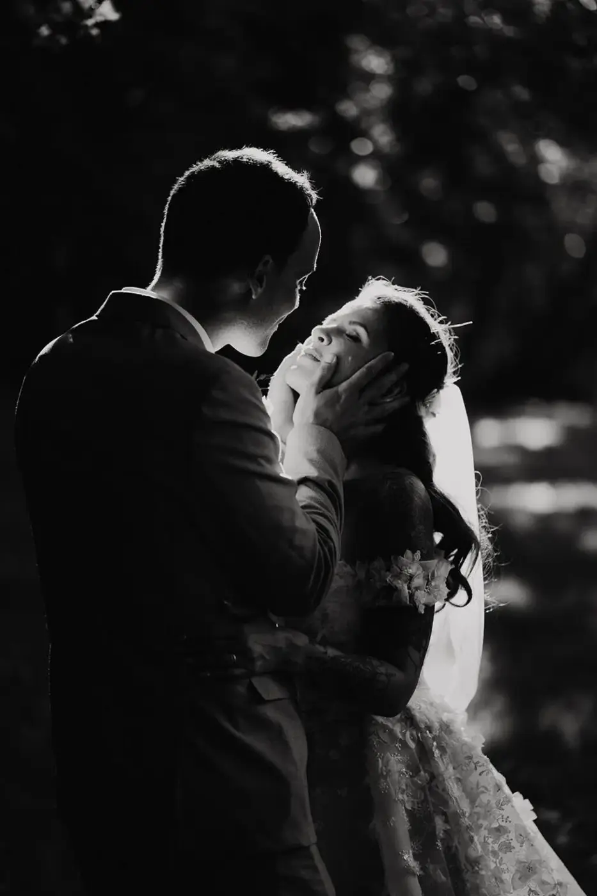
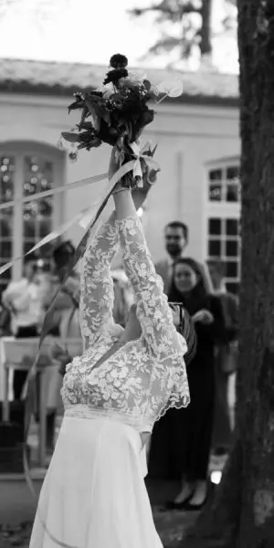

L’émotion : le véritable secret d’un mariage mémorable
Lorsqu’un couple se lance dans l’organisation de son mariage, une question revient souvent, parfois sans même être formulée : comment faire de cette journée un mariage réellement inoubliable ?
Entre le choix du lieu de réception, la décoration de mariage, le traiteur, la robe, les fleurs, la papeterie, les animations ou encore la scénographie, il est facile de penser que la réussite d’un mariage repose essentiellement sur son apparence ou sur le budget qui lui est consacré.
Pourtant, lorsque l’on interroge des invités plusieurs années après avoir assisté à un mariage, ils se souviennent rarement du menu exact servi à table ou du modèle des chaises installées sous la tente de réception.
En revanche, ils se rappellent parfaitement l’émotion ressentie lorsque les mariés ont échangé leurs vœux, d’un discours particulièrement touchant ou encore d’un fou rire partagé avec l’ensemble des invités.
C’est précisément ce qui distingue un mariage agréable d’un mariage véritablement mémorable.

Pourquoi certains mariages marquent les esprits pendant des années ?
Nous avons naturellement tendance à croire que les souvenirs se construisent autour des éléments matériels. Pourtant, de nombreuses études en neurosciences démontrent que notre cerveau retient avant tout les émotions associées à un événement.
Cette réalité est particulièrement visible dans l’univers du mariage.
Un mariage haut de gamme, doté d’une décoration spectaculaire et d’un budget conséquent, ne garantit pas forcément un souvenir durable. À l’inverse, un mariage plus intimiste, organisé avec sincérité et authenticité, peut rester gravé dans les mémoires pendant des décennies.
La raison est simple : les émotions créent une connexion profonde.
Lorsque les invités rient, pleurent, sont surpris ou profondément touchés, leur cerveau considère ces instants comme importants. Ces moments deviennent alors des souvenirs durables.
Les nouvelles tendances
Depuis quelques années, les attentes des couples évoluent considérablement.
Aujourd’hui, les futurs mariés souhaitent organiser un mariage élégant et raffiné, mais ils recherchent avant tout de l’authenticité et de la personnalisation.
Les grandes tendances standardisées laissent progressivement place à des célébrations uniques qui ressemblent réellement aux mariés.
Les invités sont eux aussi sensibles à cette évolution.
Ils ne cherchent plus uniquement à être impressionnés par une décoration spectaculaire ou par une réception luxueuse. Ils souhaitent vivre une expérience sincère et partager un moment fort avec les personnes qu’ils aiment.
Cette recherche d’authenticité explique pourquoi certains mariages touchent profondément les invités tandis que d’autres, pourtant très beaux visuellement, s’effacent progressivement des souvenirs.
Les souvenirs les plus forts ne sont jamais matériels
Prenez quelques instants pour penser aux mariages dont vous gardez un souvenir particulièrement marquant.
Qu’est-ce qui vous revient immédiatement à l’esprit ?
Dans la majorité des cas, ce n’est pas la composition florale du centre de table ni la couleur exacte des serviettes.
Vous vous souvenez probablement d’un regard échangé entre les mariés, d’une chanson qui a fait pleurer toute l’assemblée, d’un discours improvisé particulièrement émouvant, ou encore d’un moment inattendu qui a réuni tout le monde dans une émotion commune.
Les mariages qui traversent le temps sont ceux qui créent des moments de vie authentiques, des instants que personne n’avait anticipés, des émotions sincères qui rassemblent.
C’est souvent ce qui pousse les invités à dire plusieurs années après :
« Je n’oublierai jamais ce mariage. »

Le mariage moderne : une expérience à vivre
Aujourd’hui, les couples souhaitent offrir bien plus qu’une belle réception à leurs proches, ils veulent leur faire vivre une véritable expérience.
Cette approche transforme totalement la manière de concevoir un mariage.
L’objectif n’est plus seulement d’organiser une succession d’étapes : cérémonie, cocktail, dîner puis soirée, il s’agit de construire une histoire cohérente et mémorable que les invités vont vivre du début à la fin, et dont ils vont se souvenir toute leur vie.
L’expérience commence dès la réception du faire-part. Elle se poursuit lors de l’arrivée sur le lieu de réception. Elle se développe pendant la cérémonie, le cocktail, le repas et la soirée dansante. Et elle continue parfois même le lendemain lors d’un brunch ou d’un moment de partage plus informel.
Chaque détail contribue à la création d’un souvenir global inoubliable.
L’importance d’une petite attention unique
Les invités ne jugent pas uniquement un mariage sur ce qu’ils voient. Ils le jugent surtout sur ce qu’ils ressentent.
Lorsqu’un invité perçoit que sa présence compte réellement, il développe instantanément un lien émotionnel plus fort avec l’événement.
Cela peut passer par des attentions très simples :
- un mot personnalisé ;
- un cadeau pensé spécialement pour lui ;
- une place réfléchie à table ;
- une photo souvenir ;
- un clin d’œil à une histoire commune.
Ces petits détails ont souvent beaucoup plus d’impact qu’un élément décoratif coûteux ; parce qu’ils créent du lien unique.
Et ce sont précisément ces attentions humaines qui restent dans les souvenirs.
Pourquoi les moments mémorables marquent autant les esprits ?
La surprise agit comme un véritable amplificateur émotionnel. Elle attire immédiatement l’attention et provoque une réaction spontanée. Notre cerveau adore les événements inattendus.
C’est pourquoi ils s’impriment plus facilement dans notre mémoire.
Dans un mariage, les surprises peuvent prendre de nombreuses formes :
- l’intervention inattendue d’un proche ;
- une vidéo surprise ;
- une chanson interprétée en direct ;
- un discours préparé secrètement ;
- une animation originale ;
- une révélation émotionnelle pendant la cérémonie.
Cependant, les meilleures surprises ne sont pas forcément les plus spectaculaires.
Ce sont celles qui ont du sens, celles qui racontent une histoire, celles qui reflètent véritablement la personnalité des mariés.

La cérémonie : le cœur émotionnel du mariage mémorable
Qu’il s’agisse d’une cérémonie laïque ou religieuse, la cérémonie reste généralement le moment le plus fort émotionnellement et rend le mariage inoubliable.
C’est à cet instant que les invités découvrent réellement l’histoire du couple. Ils comprennent son parcours, ses valeurs, ses défis, ses rêves.
Les cérémonies les plus mémorables sont celles qui racontent une histoire authentique. Elles ne se contentent pas d’enchaîner des textes ou des rituels. Elles créent une véritable connexion émotionnelle entre les mariés et leurs invités.
Lorsque les proches découvrent l’intimité d’une histoire d’amour, ils se sentent impliqués émotionnellement. Ils ne sont plus simples spectateurs, ils deviennent témoins d’un moment unique.

Les vœux personnalisés : une émotion incomparable
Parmi tous les moments d’une cérémonie, les vœux personnalisés restent souvent les plus marquants. Ils permettent aux mariés de s’exprimer avec leurs propres mots ; sans filtre et sans artifice.
Les invités découvrent alors une facette plus intime du couple, les émotions deviennent naturelles et les larmes comme les sourires apparaissent spontanément.
Ce sont souvent ces instants de vérité qui deviennent les souvenirs les plus précieux.

L’ambiance : un véritable souvenir pour les invités
Un mariage réussi ne se mesure pas uniquement à travers les photos publiées sur les réseaux sociaux mais surtout à travers l’ambiance qui y règne.
Les invités oublient parfois le menu. Ils oublient parfois certaines décorations. Mais ils n’oublient jamais l’atmosphère générale. Une ambiance chaleureuse, bienveillante et joyeuse laisse une empreinte durable.
À l’inverse, même un mariage magnifique visuellement peut sembler froid si les invités ne ressentent aucune connexion particulière.
L’ambiance est ce qui transforme une réception en véritable souvenir collectif mémorable.
Comment une wedding planner peut rendre votre mariage inoubliable ?
Créer une expérience cohérente demande du temps, de l’expertise et beaucoup de réflexion. C’est précisément l’une des raisons pour lesquelles de nombreux couples choisissent aujourd’hui de faire appel à une wedding planner.
Contrairement aux idées reçues, son rôle ne consiste pas uniquement à gérer un planning ou à contacter des prestataires. Son travail consiste avant tout à construire une expérience globale.
Chaque détail est pensé dans une logique d’ensemble. Chaque choix est guidé par une intention. Chaque moment est imaginé pour créer une émotion particulière.
En tant que wedding planner à Bordeaux, j’accompagne des couples qui souhaitent vivre une journée qui leur ressemble réellement.
Mon rôle est d’abord d’apprendre à les connaître. Comprendre leur histoire, leurs valeurs, leur personnalité et leur vision du mariage. Parce qu’un mariage réussi n’est pas celui qui suit les tendances du moment, c’est celui qui reflète authentiquement le couple.
Que le mariage se déroule à Bordeaux, en Gironde, en Nouvelle-Aquitaine ou sur le Bassin d’Arcachon, l’objectif reste toujours le même : créer des souvenirs sincères et durables.
J’encourage souvent les futurs mariés à se poser une question essentielle :
« Comment voulons-nous que nos invités se sentent à la fin de cette journée ? »
Cette réflexion change complètement la manière d’organiser un mariage. Elle permet de dépasser l’aspect purement esthétique pour construire une véritable expérience humaine.
Le plus beau conseil que je donne aux futurs mariés
Au fil des années, j’ai constaté une chose : les mariages les plus réussis sont rarement ceux qui cherchent la perfection. Ils sont plutôt ceux qui privilégient l’émotion.
Mon conseil est donc simple :
Ne cherchez pas à impressionner mais cherchez plutôt à toucher.
Ne vous demandez pas uniquement ce qui sera beau. Demandez-vous ce qui sera vrai.
Les invités oublieront certains détails matériels, mais ils se souviendront toujours de ce qu’ils auront ressenti à vos côtés.
En bref
Lorsque le mariage se termine, les invités repartent parfois avec un cadeau, quelques photos et de magnifiques souvenirs.
Mais le souvenir principal est invisible. C’est l’émotion ressentie tout au long de la journée.
La joie partagée, les éclats de rire, les larmes de bonheur, les instants suspendus. La sensation d’avoir assisté à quelque chose d’authentique et d’unique.
Finalement, la réussite d’un mariage ne se mesure ni au budget investi ni au nombre d’invités présents. Elle se mesure à la capacité de créer des émotions sincères et des souvenirs durables.
Et n’est-ce pas là la plus belle définition d’un mariage réussi ?
Lovely Day Event c'est plusieurs types de prestations
L'organisation de mariage
Je vais intervenir sur toutes les étapes de vos préparatifs et vous guider dans vos choix. Je suis force de proposition pour que votre mariage ne ressemble qu’à vous.
Décoration de mariage
Créative et passionnée, je suis certifiée Wedding Designer et je conçois une ambiance scénographique qui correspond au thème de votre mariage.
Coordination le jour J
Je serai le chef d’orchestre pour gérer les différents prestataires, la mise en place de votre décoration et le déroulement de cette belle journée.